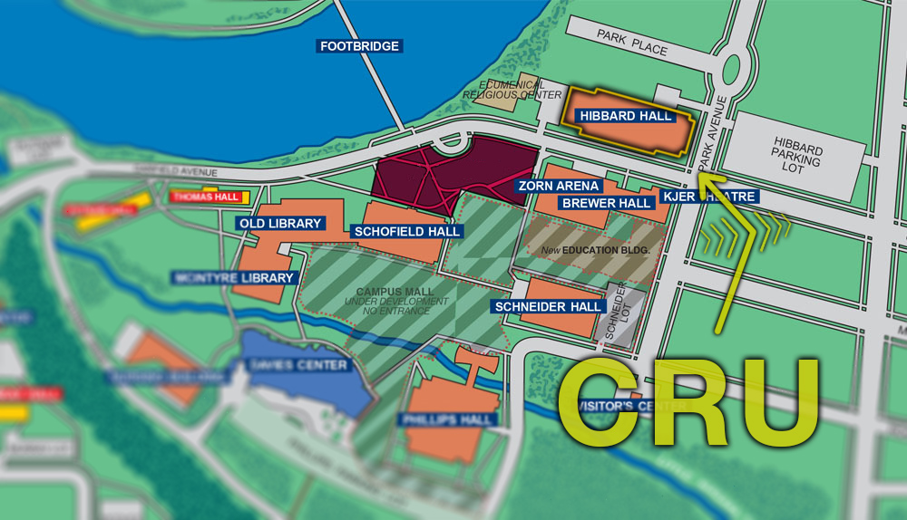

Cru is a ministry of Campus Crusade for Christ. We believe it’s important to have a personal relationship with Christ and to share that belief with others. Our mission is this; That we would be turning lost students into Christ-centered laborers, so that everyone on campus would know someone who truly follows Christ. Please take a look around and let us know if you have any questions!
Our weekly meeting is every Thursday at 8 pm in Hibbard 100 (See map below). We hope to see you there!
